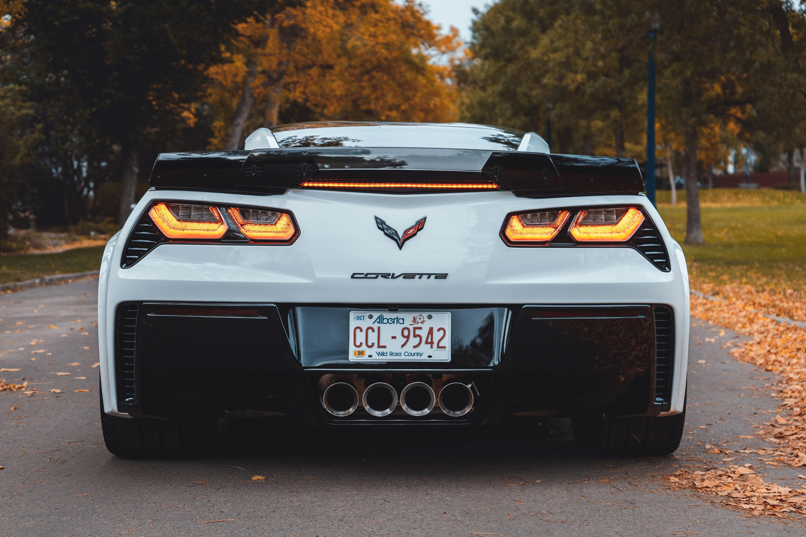
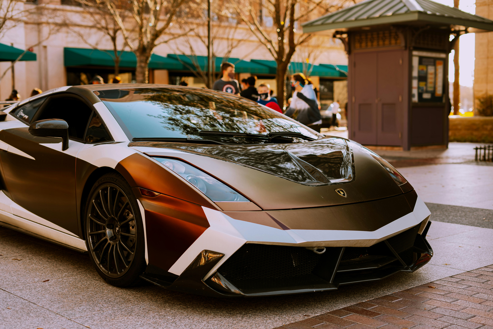
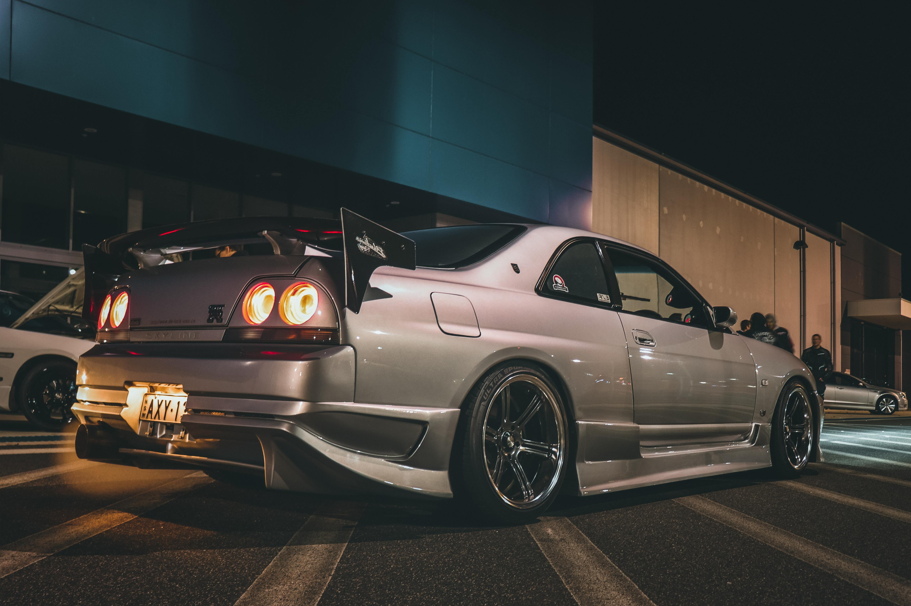
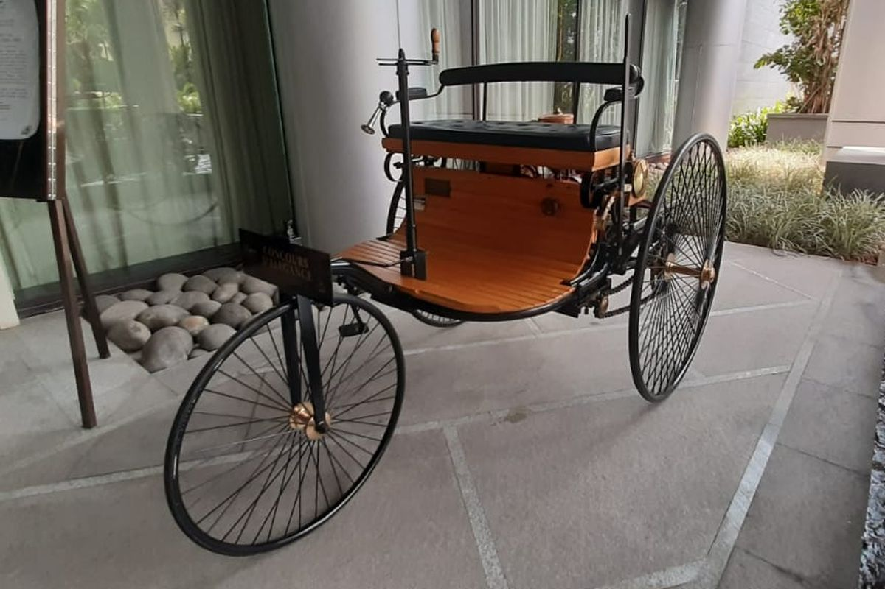
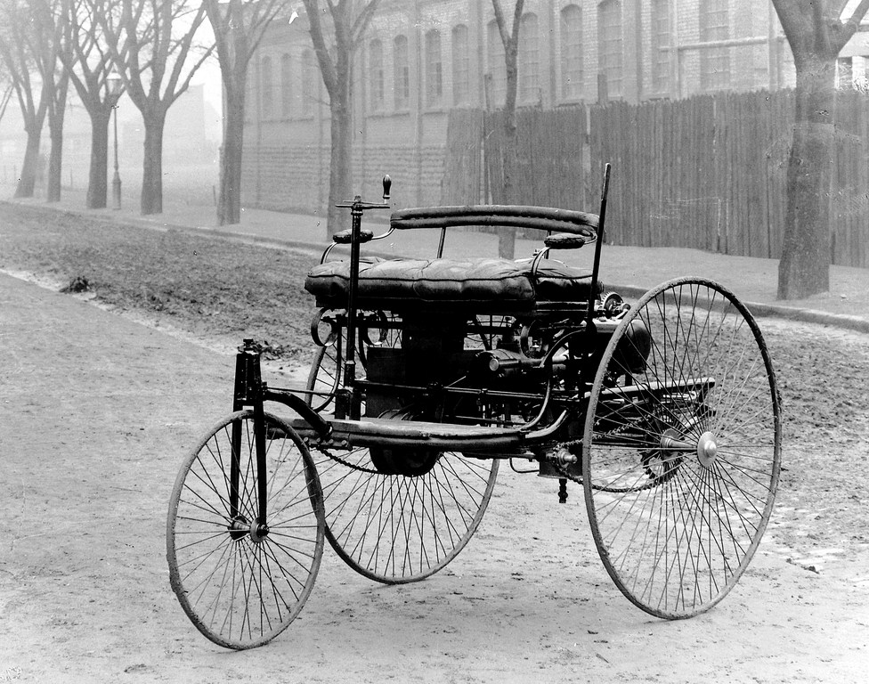
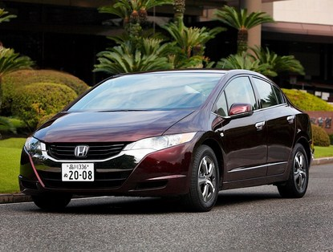
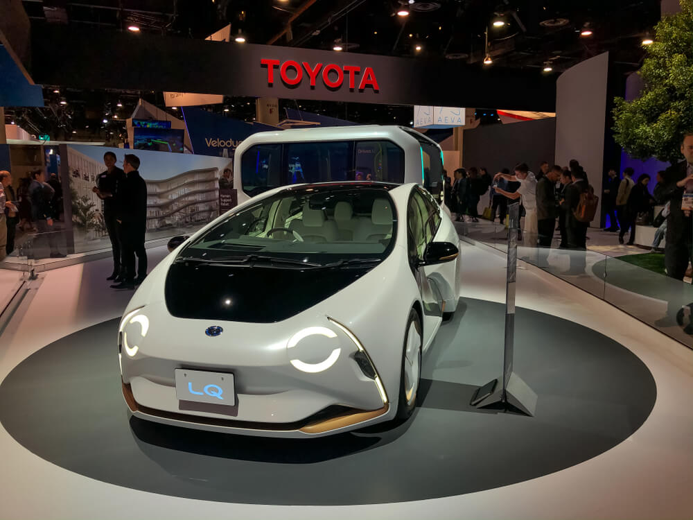

Selamat Datang di Website Kami
Kami Membahas seputar mobil terkece dan terkeren didunia



Sejarah Mobil
Mobil pertama kali ditemukan pada tahun 1886 oleh Karl Benz. Ini adalah titik awal dari revolusi transportasi global yang memungkinkan mobilitas manusia secara cepat dan efisien.
Sejak itu, mobil telah mengalami perkembangan pesat dalam desain, teknologi, dan performa. Hari ini, mobil telah menjadi bagian tak terpisahkan dari kehidupan modern.
Jenis Mobil

Kereta Mobil
Merupakan mobil beroda tiga yang pertama kali ditemukan

Mobil Benz Patent Motor Car
Mobil pertama yang ditemukan pada tahun 1886

Mobil Masa Kini
Mobil dengan teknologi terbaru dan desain modern

Mobil Masa Depan
Perkembangan mobil dalam beberapa tahun kedepan